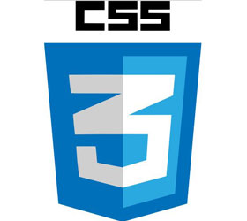

Hojas de Estilo en Cascada (Cascading Style Sheets) es el lenguaje utilizado para describir la presentación de documentos HTML o XML, esto incluye varios lenguajes basados en XML como son XHTML o SVG. CSS describe como debe ser renderizado el elemento estructurado en pantalla, en papel, hablado o en otros medios. CSS es uno de los lenguajes base de la Open Web y posee una especificación estandarizada por parte del W3C. Desarrollado en niveles, CSS1 es ahora obsoleto, CSS2.1 es una recomendación y CSS3, ahora dividido en módulos más pequeños, está progresando en camino al estándar.
Conceptos clave
Describe la sintaxis y formas del lenguaje e introduce fundamentos como especificidad (specificity) y herencia (inheritance), el modelo de caja (box model), margin collapsing, stacking y block-formatting contexts, y los valores inicial (initial), calculado (computed), used y actual. Entidades como propiedades abreviadas CSS (CSS shorthand properties) también son definidas.

Herramientas para desarrollo CSS
- W3C CSS Validation Service revisa si un CSS dado es válido. El servicio en OnlineWebCheck.com también hace lo mismo. Estos son herramientas de debugging invaluables.
- Firefox Developer Tools permite ver y editar en vivo el CSS de una página a través del Inspector y las herramientas de edición de estilos.
- Firebug extension para Firefox, una extensión popular de este navegador que permite editar CSS en vivo en sitios vistos. Muy práctico para probar algunos cambios, aunque ésta extensión puede hacer mucho más.
- Web Developer extension para Firefox, también permite ver y editar CSS en vivo en sitios vistos. Más simple que Firebug, aunque menos potente.
- EditCSS extension para Firefox, permite editar CSS en la barra lateral.
- Herramientas CSS.